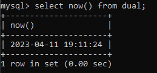
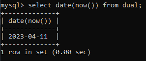
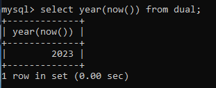
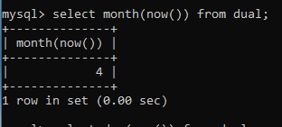
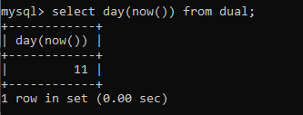
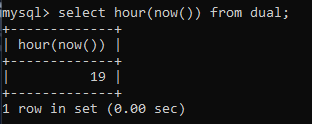
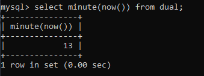
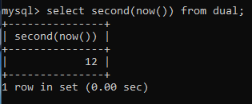
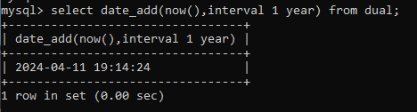
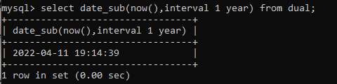

Date functions are used to perform operations on date values. MySQL has a number of built-in functions that can
be used to manipulate date and time data. Here are some of the most commonly used date functions in MySQL:
- NOW() - Returns the current date and time
Syntax :
mysql> select NOW() from dual;
Example :

- DATE() - Extracts the date part of a date or datetime expression
Syntax :
mysql> select DATE(datetime_expression) from dual;
Example :

- YEAR() - Returns the year for a given date
Syntax :
mysql> select YEAR(date_expression) from dual;
Example :

- MONTH() - Returns the month for a given date
Syntax :
mysql> select MONTH(date_expression) from dual;
Example :

- DAY() - Returns the day for a given date
Syntax :
mysql> select DAY(date_expression) from dual;
Example :

- HOUR() - Returns the hour for a given time or datetime expression
Syntax :
mysql> select HOUR(datetime_expression) from dual;
Example :

- MINUTE() - Returns the minute for a given time or datetime expression
Syntax :
mysql> select MINUTE(datetime_expression) from dual;
Example :

- SECOND() - Returns the second for a given time or datetime expression
Syntax :
mysql> select SECOND(datetime_expression) from dual;
Example :

- DATE_ADD() - Adds a time/date interval to a date and then returns the date
Syntax :
mysql> select DATE_ADD(date, INTERVAL value unit) from dual;
Example :

- DATE_SUB() - Subtracts a time/date interval from a date and then returns the date
Syntax :
mysql> select DATE_SUB(date, INTERVAL value unit) from dual;
Example :
